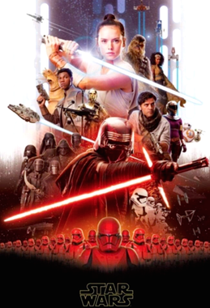
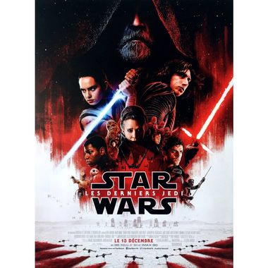
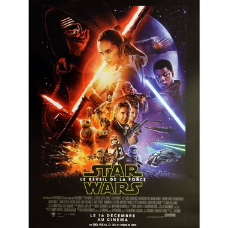

Star Wars IX

Star Wars : l' 'ascension de Skywalker est le neuvieme film de la saga Star Wars .
C'est un film Americain de science fiction de type space opera coécrit et réalisé par J. J. Abrams, dont la sortie est en Decembre 2019.
rappel :
Dans les films précedant on sait que Han Solo meurt, tué par son fils Kylo Ren et Rey commence a comprendre qu'elle a lien d'affinite avec Kylo Ren
haut de la pageStar Wars VIII

Star Wars : Les Derniers Jedi. Lorsque l'épisode débute, les derniers éléments de la Résistance sont traqués par le Premier Ordre. La générale Leia Organa termine l'évacuation de leur base principale lorsqu'une flotte du Premier Ordre arrive en orbite depuis l'hyper-espace. Les deux flottes se font face. La base de surface est bombardée et détruite par les deux puissants canons d'un cuirassé qui accompagne les destroyers stellaires. Poe Dameron, BB-8 et leur vaisseau X-wing s'approchent seuls du cuirassé, demandant une communication avec le général Hux qui lui se trouve dans le vaisseau amiral.
haut de la pageStars Wars VII

Star Wars : Le Réveil de la Force. Trente années après la destruction de la seconde Étoile de la mort, Luke Skywalker, le dernier Jedi en vie, a disparu. Le Premier Ordre, né des ruines de l'Empire galactique, fouille la galaxie pour le retrouver, tout comme la Résistance, une force militaire défendant la Nouvelle République. À la tête de la Résistance se trouve la sœur jumelle de Luke, la générale Leia Organa.
haut de la page